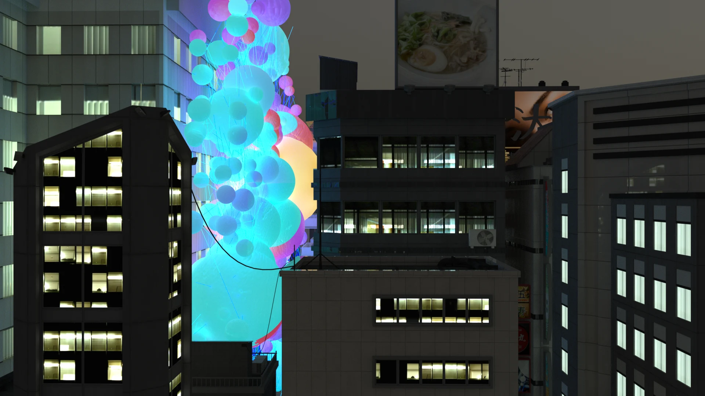

Ideas into
things that work.
I design digital products, explore spatial experiences, and build tools that turn research into something useful.
Explore my work ↓From imagined spaces
to things you can use.
Selected work(15)
IDEAS, BUILT IN DIFFERENT MEDIUMSSeeing the whole.
Making it happen.

GRAVITY INFILL / SCI-ARC, 2021I’m Charlene, a designer and independent product developer based in Irvine, California.
My background is in architecture and computational design. At WATG and MG2, I worked across hospitality, master planning, and retail projects—from early concepts and client presentations to construction documentation and permitting coordination.
Since then, I’ve co-founded a floral business, supported cross-border design projects, and learned full-stack development. Today, I build market research tools including GammaDesk and Signal-Lab, connecting research, interface design, and working software.
Across these roles, I enjoy making complex ideas clear, bringing people and details together, and carrying a project through to something tangible.
Digital products & researchGammaDesk · Signal-Lab · Full-stack applications
Architecture & spatial experiencesWATG / Wimberly · MG2 · Computational design
Business & project coordinationLemuria · Clients & suppliers · Cross-border teams
M.Arch, SCI-Arc · B.S. Architecture, University of Cincinnati
Full Stack Web & Mobile Development, Nucamp
something.↗